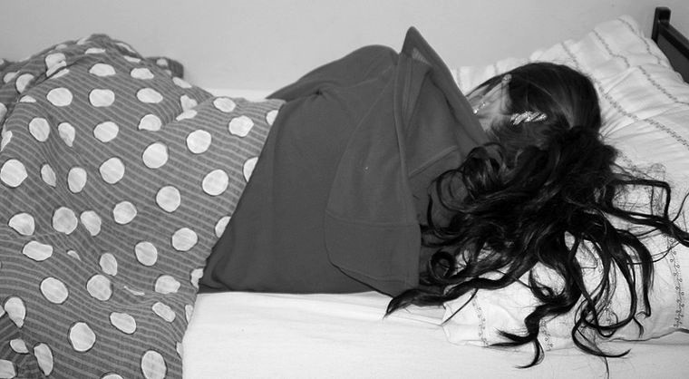

<ion-view style="" class=" " id="page22" title="Notschlafstellen">
    <ion-content class="has-header" scroll="false" padding="true">
        <div style="width: 283px; height: 18px;" class="spacer"></div>
        <h2 class=" " style="color: rgb(0, 163, 163); font-weight: 300; text-align: center;" id="notschlafstellen-heading40">Notschlafstellen</h2>
        <div class="">
            
        </div>
        <a class=" button button-calm  button-block " id="notschlafstellen-button46" ui-sref="notschlafstellenFRFrauen">Notschlafstellen für Frauen</a>
        <a class=" button button-calm  button-block " id="notschlafstellen-button47" ui-sref="notschlafstellenFRMNner">Notschlafstellen für Männer</a>
        <a class=" button button-calm  button-block " id="notschlafstellen-button48" ui-sref="notschlafstellenFRJugendliche">Notschlafen für Jugendliche</a>
    </ion-content>
</ion-view>